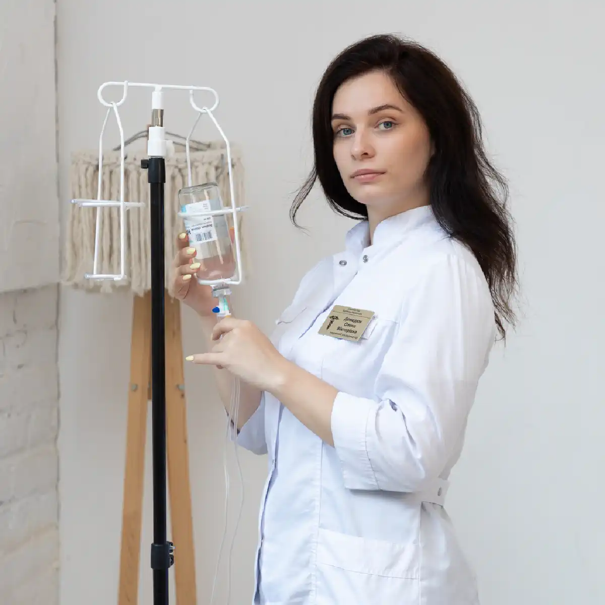

+38(068) 79 72 782
+38(068) 79 72 782Лікування алкоголізму Харків
Вибери життя без алкоголю


Безкоштовна консультація, працюємо цілодобово 24/7
Вибери життя без алкоголю
Лікування алкоголізму в Харкові — це комплексна медична допомога, спрямована не лише на припинення вживання алкоголю, а й на відновлення організму, стабілізацію психоемоційного стану та профілактику зривів. Алкогольна залежність належить до хронічних захворювань: вона зачіпає роботу нервової системи, серця, печінки, гормональний баланс і поведінку людини. Самостійні спроби «взяти себе в руки» часто дають короткочасний ефект, тому що залежність формується на фізіологічному та психологічному рівнях. Саме тому ефективне лікування завжди будується поетапно — від детоксикації до закріплення результату.
Алкоголізм рідко розвивається «раптово». Зазвичай це поступовий процес: спочатку алкоголь використовується як спосіб розслабитися або зняти стрес, потім зростає частота вживання, збільшуються дози, погіршується контроль над кількістю випитого. З часом формується стійка тяга, а періоди тверезості починають супроводжуватися дратівливістю, тривожністю, порушенням сну та вираженим внутрішнім дискомфортом. На цьому етапі залежність уже впливає не лише на звички, а й на фізичний стан, мислення, емоційні реакції та повсякденне життя.
Комплексне лікування необхідне тому, що однієї «крапельниці» або однієї процедури кодування зазвичай недостатньо для стійкого результату. Детоксикація допомагає зняти гострий стан і зменшити інтоксикацію, але не усуває психологічні причини вживання і не формує нові механізми поведінки. Тому після стабілізації стану важливо переходити до наступного етапу: роботи з тягою, тригерами зриву, режимом сну, стресом та емоційним навантаженням. Саме такий послідовний підхід дає шанс не просто тимчасово припинити вживання, а дійсно вийти до стабільного відновлення. Лікування алкоголізму — це не лише допомога самому пацієнту, а й підтримка сім’ї. Близькі часто довго живуть у стані стресу, не розуміючи, як правильно реагувати, як говорити про лікування і як не посилювати конфлікт. Грамотна наркологічна допомога допомагає вибудувати більш зрозумілий і спокійний алгоритм дій: що робити в гострому стані, коли потрібен терміновий лікар, як підтримати людину після детоксикації і які кроки важливі для профілактики повторних зривів.
Окреме значення має індивідуальний підхід. У різних пацієнтів залежність перебігає по-різному: відрізняються тривалість уживання, наявність запоїв, тяжкість абстинентного синдрому, стан печінки і серця, рівень тривожності, супутні захворювання, мотивація до лікування. Одна людина звертається на етапі регулярного зловживання, інша — вже після багатоденних запоїв і тяжкої інтоксикації. Тому безпечна допомога завжди починається з оцінки стану і підбору тактики лікування під конкретного пацієнта, а не за універсальною схемою. Головна мета такого підходу — не просто зупинити вживання на короткий строк, а допомогти людині відновити фізичне здоров’я, знизити тягу до алкоголю, повернути емоційну стійкість і поступово відновити контроль над своїм життям. Саме тому комплексне лікування алкогольної залежності завжди розглядається як процес, а не як разова процедура.
Алкоголізм — це захворювання, при якому формується стійка тяга до алкоголю, знижується контроль над кількістю випитого і поступово змінюється реакція організму на спиртне. З часом алкоголь стає «способом справлятися» зі стресом, тривогою, втомою або внутрішніми конфліктами. Паралельно розвивається фізична залежність: організм перебудовується під регулярне надходження алкоголю, і при спробі припинити вживання виникають симптоми відміни. Розвиток алкоголізму зазвичай відбувається поступово. Спочатку збільшується частота вживання, потім зростає дозування, з’являється звичка «знімати напруження» спиртним, а пізніше формуються запої та виражена абстиненція. Чим раніше почати лікування, тим вищий шанс відновити здоров’я і запобігти ускладненням.
На ранньому етапі залежність часто маскується під «звичайну звичку» або «контрольоване вживання». Людина може говорити, що п’є лише у вихідні, «як усі» або тільки після важкого дня, але при цьому вже поступово втрачає контроль над кількістю алкоголю і починає все частіше шукати приводи для вживання. З часом змінюється не лише частота, а й сам сенс уживання: алкоголь перестає бути епізодом і стає регулярним способом регулювати настрій і самопочуття. Поступово посилюються і фізіологічні зміни. Організм починає гірше переносити періоди тверезості: з’являється дратівливість, тривожність, порушення сну, внутрішнє напруження, слабкість. На цьому тлі людині стає дедалі складніше відмовитися від алкоголю самостійно, тому що вживання вже сприймається не як бажання, а як спосіб тимчасово зняти дискомфорт. Саме так формується замкнене коло залежності: алкоголь дає короткочасне полегшення, але в довгостроковій перспективі лише посилює проблему.
У міру прогресування алкоголізму страждає не лише нервова система, а й внутрішні органи. Підвищується навантаження на печінку, серце, судини, порушуються обмінні процеси, погіршується якість сну, знижується працездатність, страждають пам’ять і концентрація уваги. У багатьох пацієнтів з’являються перепади тиску, тахікардія, тремор, пітливість, погіршення апетиту, емоційна нестабільність. Ці зміни часто наростають поступово, тому людина не завжди одразу пов’язує їх з алкогольною залежністю. Чим раніше починається лікування, тим легше зазвичай проходить відновлення. На ранніх стадіях простіше стабілізувати стан, зменшити тягу до алкоголю і запобігти розвитку тяжких ускладнень. При більш тривалому перебігу залежності допомога теж можлива і ефективна, але, як правило, потребує більш комплексного і поетапного підходу: детоксикації, психотерапевтичної підтримки, профілактики зривів і тривалого спостереження. Саме тому раннє звернення до нарколога — це важливий крок до збереження здоров’я і повернення до стабільного життя.
Ранні ознаки залежності часто залишаються непоміченими, тому що людина може зберігати роботу і звичний спосіб життя. Але алкоголізм проявляється не лише кількістю алкоголю, а насамперед зміною поведінки і реакцій організму. Найбільш характерні ознаки: втрата контролю над дозою, регулярні приводи для вживання, зростання толерантності (потрібно більше, щоб відчути ефект), дратівливість без алкоголю, погіршення сну, тривожність, втрата інтересу до звичних справ, спроби «лікуватися» алкоголем зранку, поява запоїв і абстинентного синдрому. Якщо близькі помічають, що алкоголь став центром життя, а зупинитися самостійно складно — це привід звернутися до нарколога.
Часто перші зміни помітні саме в повсякденних дрібницях. Людина починає частіше шукати приводи випити, стає більш напруженою або дратівливою у тверезому стані, гірше переносить стрес, відкладає справи, які раніше були важливими. Поступово змінюється режим сну, знижується енергія, з’являється емоційна нестабільність. На цьому етапі залежність ще може виглядати «неочевидною», але саме в цей період особливо важливо не ігнорувати сигнали. Окрема тривожна ознака — зміна ставлення до алкоголю. Якщо раніше вживання було епізодичним, а з часом алкоголь починає сприйматися як обов’язковий спосіб розслабитися, заснути, впоратися з тривогою або «прийти до тями», це вже свідчить про формування залежності. Також насторожує, коли людина починає виправдовувати вживання, приховувати його обсяг або дратуватися на розмови про лікування.
З часом до поведінкових ознак додаються фізичні симптоми: тремор, пітливість, перепади тиску, прискорене серцебиття, нудота, слабкість, погіршення апетиту. Після вживання відновлення займає дедалі більше часу, а самопочуття у тверезі періоди стає гіршим. Це свідчить про те, що організм уже зазнає вираженого навантаження, і залежність впливає не лише на поведінку, а й на здоров’я. Алкоголізм рідко розвивається однаково у всіх. У одних пацієнтів швидше формуються запої, у інших довго переважає регулярне «побутове» вживання, у третіх на перший план виходять тривожність, безсоння і втрата контролю. Але спільна ознака одна: алкоголь починає займати надто важливе місце в житті і поступово підміняє здорові способи відновлення та емоційного розвантаження.
Якщо такі ознаки вже з’явилися, краще не чекати, поки стан стане тяжчим. Звернення до нарколога на ранньому етапі допомагає об’єктивно оцінити ситуацію, зрозуміти ступінь залежності і підібрати лікування до того, як сформуються тяжкі запої, виражена абстиненція і ускладнення з боку серця, печінки та нервової системи.
Алкогольна залежність рідко має одну причину. Частіше це поєднання психологічних і фізіологічних факторів.
До психологічних причин належать хронічний стрес, тривожність, депресивні стани, емоційне вигорання, проблеми в сім’ї, травматичний досвід, соціальний тиск і звичка «знімати напруження» алкоголем. До фізіологічних — спадкова схильність, особливості обміну речовин, порушення роботи нейромедіаторних систем, формування стійкої толерантності і синдрому відміни. Саме тому у одних людей залежність формується швидше, а у інших — повільніше, навіть при схожому рівні вживання. Психологічні та фізіологічні фактори зазвичай підсилюють один одного. Наприклад, людина може почати вживати алкоголь як спосіб справлятися зі стресом або тривогою, а з часом організм звикає до регулярного надходження спиртного. У результаті формується не лише психологічна звичка, а й фізична залежність: без алкоголю погіршується сон, з’являється дратівливість, внутрішнє напруження, слабкість. Це створює замкнене коло, у якому вживання стає способом тимчасово полегшити стан, але в довгостроковій перспективі лише посилює проблему. Додатково роль відіграють і соціальні фактори: оточення, культура вживання, доступність алкоголю, робоче середовище, де прийнято «знімати стрес» спиртним. Якщо в сім’ї або близькому колі алкоголь сприймається як нормальний спосіб розслаблення, ризик формування залежності підвищується. Також важливі індивідуальні особливості особистості: рівень стресостійкості, здатність справлятися з емоціями, наявність підтримуючого середовища і навичок саморегуляції.
Лікування алкоголізму має бути комплексним: важливо не лише «зняти інтоксикацію», а й розібратися, чому алкоголь став способом регулювати стан. На першому етапі медична допомога допомагає стабілізувати фізичний стан, нормалізувати сон, зменшити тривожність і знизити токсичне навантаження на організм. Але для стійкого результату цього недостатньо — важливо працювати і з причинами вживання. Надалі лікування може включати психотерапевтичну підтримку, формування нових способів справлятися зі стресом, корекцію режиму сну і відпочинку, роботу з тригерами зриву та зміцнення мотивації до тверезості. Такий підхід дозволяє не просто тимчасово припинити вживання, а поступово знизити тягу до алкоголю і повернути людині більш стабільний фізичний та емоційний стан. Комплексне розуміння причин залежності допомагає вибудувати лікування більш точно і ефективно. Коли враховуються і медичні, і психологічні, і соціальні фактори, шанс на тривалу ремісію та стійке відновлення значно вищий.
Стадія алкоголізму відображає глибину залежності і допомагає лікарю підібрати тактику лікування. На ранній стадії частіше присутня психологічна тяга і поступове зростання доз. На другій стадії зазвичай формуються абстинентні симптоми, запої, погіршується сон, з’являється виражена дратівливість і тривожність без алкоголю. На більш тяжких стадіях наростають ускладнення з боку внутрішніх органів і психіки, знижується соціальна адаптація, посилюється ризик зривів. Визначити стадію точно може лікар після консультації та збору анамнезу. Це важливо, тому що при тривалих запоях і вираженій відміні самостійна відмова від алкоголю може бути небезпечною і потребує медичного контролю. На практиці стадії залежності відрізняються не лише кількістю вживаного алкоголю, а й реакцією організму, поведінкою людини та впливом алкоголю на її життя.
Стадія алкоголізму — це не «ярлик», а медичний орієнтир, який допомагає вибрати безпечну та ефективну стратегію допомоги. Від стадії залежить, чи потрібен терміновий вивід із запою, чи можна проводити лікування вдома, чи потрібне стаціонарне спостереження, які методи профілактики зривів будуть найбільш підходящими. Тому при підозрі на залежність краще не намагатися самостійно оцінити її тяжкість. Консультація спеціаліста допомагає об’єктивно визначити стадію, оцінити ризики ускладнень і скласти індивідуальний план лікування, який дозволить пройти відновлення максимально безпечно і з більш стійким результатом.
Вартість лікування алкоголізму в Харкові починається від 2199 грн.
Терапія починається з консультації та оцінки стану пацієнта. Лікар уточнює тривалість вживання, наявність запоїв, супутні захворювання, переносимість препаратів, алергії та фактори ризику. Далі визначається оптимальна стратегія: детоксикація, відновлення, психотерапевтична підтримка та методи профілактики зривів. На цьому етапі спеціаліст також оцінює поточне самопочуття пацієнта: чи є ознаки інтоксикації або абстинентного синдрому, чи порушений сон, чи присутні тривожність, слабкість, стрибки тиску, проблеми з апетитом. Важливо зрозуміти, чи потрібна термінова медична допомога, чи лікування може розпочатися в плановому форматі. Іноді першим кроком стає виведення із запою або стабілізація стану, після чого можна переходити до подальшої терапії залежності.
Після зняття гострого стану починається етап відновлення. Він спрямований на нормалізацію сну, роботи нервової системи, обмінних процесів, поступове повернення енергії та стабільного самопочуття. У цей період лікар може рекомендувати підтримувальну терапію, коригування режиму дня, харчування та навантаження. Це важливо, тому що саме в перші тижні після припинення вживання організм є найбільш вразливим, а ризик повернення до алкоголю вищий. Наступний важливий компонент лікування — робота з психологічними причинами залежності. Психотерапевтична підтримка допомагає зрозуміти тригери вживання, навчитися справлятися зі стресом без алкоголю, вибудувати нові звички та зміцнити мотивацію до тверезості. Без цього етапу навіть успішна детоксикація може дати лише тимчасовий ефект, тому що зберігаються старі моделі поведінки.
Методи профілактики зривів підбираються індивідуально. Залежно від ситуації лікар може запропонувати медикаментозну підтримку, різні варіанти кодування за медичними показаннями, регулярні консультації, участь близьких у процесі відновлення та поступове спостереження. Такий підхід дозволяє не лише припинити вживання, а й утримати результат у довгостроковій перспективі. Лікування алкоголізму — це процес. Завдання лікаря не просто «зняти симптоми», а допомогти вийти на стабільну тверезість і знизити ймовірність повторних епізодів. Послідовне проходження етапів терапії, регулярний контакт зі спеціалістом і увага до відновлення значно підвищують шанс на стійкий результат і повернення до повноцінного життя без залежності.
Детоксикація та виведення із запою часто є першим кроком, коли людина перебуває у стані інтоксикації або тривалого вживання. Мета — знизити токсичне навантаження, відновити водно-електролітний баланс, підтримати роботу серця, печінки та нервової системи, нормалізувати сон і загальне самопочуття.
Перед початком лікування лікар оцінює стан пацієнта: вимірює тиск, пульс, сатурацію, уточнює тривалість вживання, вираженість симптомів, наявність хронічних захворювань і протипоказань. Це необхідно, щоб визначити безпечний формат допомоги — вдома або в клініці — та підібрати індивідуальну схему терапії. Такий підхід дозволяє не просто полегшити стан, а зробити детоксикацію максимально контрольованою та безпечною. Під час детоксикації може застосовуватися інфузійна терапія, симптоматична підтримка та спостереження за динамікою самопочуття. На тлі правильно підібраного лікування поступово зменшуються слабкість, нудота, тремор, тривожність, стабілізуються тиск і пульс, стає легше заснути. Лікар контролює реакцію організму і за потреби коригує терапію, що особливо важливо при нестабільному стані або наявності супутніх захворювань.
Після стабілізації стану пацієнту дають рекомендації щодо відновлення, а також обговорюють подальший план лікування залежності. Зазвичай це поради щодо питного режиму, харчування, режиму сну, підтримувальних препаратів і спостереження за самопочуттям у найближчі дні. Якщо є ризик повторного запою, лікар може запропонувати наступний етап допомоги — консультації, психотерапевтичну підтримку, протирецидивні методи та план поступового відновлення. Детоксикація — це старт, але не повноцінне лікування алкоголізму, якщо не працювати з причинами і потягом. Вона допомагає безпечно пройти гострий період і повернути фізичну стабільність, але для стійкого результату необхідне продовження терапії. Саме поєднання медичної допомоги, психологічної підтримки та профілактики зривів дає найбільший шанс на тривалу тверезість і відновлення здоров’я.
Психотерапія допомагає закріпити тверезість і знизити ризик зривів. Вона спрямована на роботу з тригерами вживання, стресом, тривожністю, звичками, емоційними реакціями та внутрішніми конфліктами. Часто саме психотерапія стає ключовим компонентом, який робить результат стійким. У процесі терапії людина вчиться краще розуміти, у яких ситуаціях виникає потяг до алкоголю, які емоції його посилюють і які сценарії поведінки призводять до повторного вживання. Це може бути втома після роботи, конфлікти в сім’ї, відчуття самотності, тривога, звичка «відзначати» події або необхідність швидко зняти напруження. Усвідомлення цих факторів — перший крок до того, щоб навчитися реагувати по-іншому і не повертатися до старої моделі поведінки.
Формат підбирається індивідуально: це може бути підтримувальна терапія, робота з мотивацією, навчання навичкам саморегуляції та профілактика рецидивів. У ході психотерапії пацієнт опановує практичні інструменти — як справлятися зі стресом без алкоголю, як стабілізувати сон, як реагувати на сильні емоції, як вибудовувати більш здорові звички та режим. Це не лише розмова про проблему, а поступове формування нових способів жити без залежності. Також психотерапія допомагає відновити внутрішню впевненість і відчуття контролю над життям. У багатьох людей після припинення вживання з’являється страх зриву, невпевненість у собі, емоційні коливання. Регулярна робота зі спеціалістом знижує це напруження, допомагає закріпити мотивацію до тверезості й пройти період адаптації спокійніше.
За потреби до процесу можуть бути залучені й близькі. Сімейна підтримка, розуміння з боку оточення і правильна взаємодія всередині сім’ї значно підвищують шанси на стійкий результат. Психотерапевтична робота допомагає не лише самому пацієнту, а й його близьким краще зрозуміти механізм залежності та вибудувати більш здорову комунікацію. У підсумку психотерапія стає не доповненням, а важливою частиною лікування алкогольної залежності. Саме вона допомагає закріпити результат після детоксикації, знизити ймовірність повторних епізодів і сформувати стійку основу для тривалої тверезості та стабільного психоемоційного стану.
Кодування від алкоголізму — це метод, який може використовуватися як частина комплексного лікування, коли пацієнт стабілізований і мотивований на тверезість. Лікар підбирає варіант кодування за показаннями і з урахуванням протипоказань. Важливо, щоб кодування не замінювало лікування, а посилювало його, допомагаючи утримувати тверезість у період відновлення. Перед кодуванням необхідна консультація та оцінка стану, тому що метод має бути безпечним і підходящим конкретній людині. Кодування застосовується не як «швидке рішення», а як додатковий інструмент підтримки. Його завдання — знизити ризик імпульсивного вживання, сформувати більш чіткий внутрішній бар’єр і дати пацієнту час закріпити нові звички тверезого життя. У цей період особливо важливі відновлення сну, емоційної стабільності, режиму дня і робота з психологічними причинами залежності — саме в поєднанні з ними кодування показує найкращий результат.
Існує кілька підходів до кодування, і вибір методу завжди індивідуальний. Це можуть бути медикаментозні способи, спрямовані на формування негативної реакції на алкоголь або зниження потягу, а також психотерапевтичні методи, що працюють через установку на тверезість і посилення мотивації. Кожен із варіантів має свої показання, обмеження і строки дії, тому рішення приймається лише після бесіди з лікарем, оцінки стану здоров’я та готовності пацієнта дотримуватися рекомендацій. Особливе значення має підготовка до кодування. Зазвичай потрібен період тверезості перед процедурою, щоб організм встиг відновитися після інтоксикації, а лікар міг об’єктивно оцінити самопочуття. Спеціаліст уточнює наявність хронічних захворювань, перенесені раніше реакції на препарати, стан серця, печінки, нервової системи, рівень тривожності та загальний психологічний стан. Це необхідно для того, щоб метод був не лише ефективним, а й безпечним.
Кодування працює найкраще тоді, коли у пацієнта є внутрішня готовність до тверезості. Якщо процедура проводиться під тиском родичів або без усвідомленої мотивації, її ефект може бути короткочасним. Тому лікар зазвичай обговорює з пацієнтом цілі лікування, очікування, можливі труднощі та план подальшої підтримки після кодування. Після процедури пацієнт отримує рекомендації щодо способу життя, емоційного навантаження, стресу, режиму сну та спостереження за станом. Часто саме період після кодування стає часом активного відновлення: людина вчиться жити без алкоголю, повертається до роботи, нормалізує стосунки з близькими, формує нові способи відпочинку і зняття напруження. У цей період корисні регулярні консультації спеціаліста, психотерапевтична підтримка і контроль динаміки стану.
Таким чином, кодування — це не самостійне лікування алкоголізму, а частина загальної стратегії. У поєднанні з детоксикацією, відновлювальною терапією та психологічною підтримкою воно допомагає зміцнити тверезість, знизити ризик зривів і зробити процес відмови від алкоголю більш стабільним і керованим.
Реабілітація допомагає закріпити результат і повернути людину до стабільного життя без алкоголю. Це етап відновлення звичок, режиму, емоційної стійкості, стосунків у сім’ї та соціальних навичок. Реабілітаційні програми можуть включати психотерапію, підтримку спеціалістів, роботу з мотивацією та профілактику зривів. На цьому етапі увага зміщується з гострого лікування на довгострокове відновлення. Людині важливо заново вибудувати повсякденне життя без алкоголю: налагодити сон, харчування, робочий ритм, навчитися справлятися зі стресом та емоційними навантаженнями без звичного способу «розрядки». Реабілітація допомагає поступово повернути відчуття стабільності, впевненості та контролю над своїм життям.
Чим більш тривалою була залежність, тим важливіший етап реабілітації — він знижує ймовірність повторних запоїв і допомагає сформувати стійку тверезість. Після тривалого вживання організму і психіці потрібен час, щоб адаптуватися до тверезого стану. У цей період можливі перепади настрою, тривожність, зниження енергії, складнощі з концентрацією. Підтримка спеціалістів допомагає пройти цей етап спокійніше і не сприймати тимчасові труднощі як привід повернутися до алкоголю.
Реабілітація також включає формування нових поведінкових стратегій. Пацієнт вчиться розпізнавати ситуації ризику — стрес, конфлікти, втому, соціальний тиск — і реагувати на них по-іншому. Це може бути розвиток навичок саморегуляції, планування дня, робота з цілями, відновлення інтересів і занять, які раніше приносили задоволення без вживання алкоголю. Важливою частиною стає і робота з сімейною системою. Алкогольна залежність впливає не лише на саму людину, а й на її близьких. Реабілітаційний етап допомагає налагодити комунікацію, знизити напруження у стосунках, вибудувати більш здорові межі та підтримку. Коли сім’я розуміє, як правильно реагувати і як допомагати без тиску та конфліктів, ймовірність стійкого результату значно зростає.
Формат реабілітації може бути різним: амбулаторні консультації, регулярні зустрічі зі спеціалістом, участь у групах підтримки, комплексні програми відновлення. Вибір залежить від тяжкості залежності, тривалості вживання, стану пацієнта та його життєвих обставин. Головне — щоб допомога була послідовною і тривала після зняття гострого стану. Таким чином, реабілітація — це не додатковий, а ключовий етап лікування алкогольної залежності. Саме він допомагає закріпити результат, знизити ризик рецидивів і поступово повернути людині повноцінне, стабільне і тверезе життя.
Жіночий алкоголізм часто розвивається швидше і довго може залишатися прихованим. При цьому сильніше страждає гормональна система, психоемоційна сфера, сон і загальний стан організму. Часто присутні почуття провини і сорому, через які жінка відкладає звернення по допомогу. Це пов’язано не лише з фізіологічними особливостями, а й із соціальними факторами. Жінки частіше намагаються приховати проблему, продовжуючи виконувати роботу, піклуватися про сім’ю і підтримувати звичний спосіб життя. Зовні все може виглядати благополучно, тому залежність довго залишається непоміченою навіть близькими. Однак внутрішнє напруження, тривожність, емоційне виснаження і порушення сну поступово посилюються, а вживання стає способом справлятися з цим станом.
Фізіологічно жіночий організм зазвичай чутливіший до алкоголю: інтоксикація може розвиватися швидше, а токсичний вплив на печінку, нервову систему і гормональний баланс проявляється раніше. Тому навіть за відносно невеликого стажу вживання можуть виникати виражена слабкість, перепади настрою, тривожність, погіршення пам’яті, зниження енергії, проблеми зі шкірою, вагою і сном. Це робить своєчасне звернення по медичну допомогу особливо важливим.
Лікування потребує делікатного підходу, конфіденційності та поєднання медичної підтримки з психотерапією. Важливо створити безпечну і спокійну атмосферу, де пацієнтка може говорити про проблему без осуду. Медична допомога допомагає стабілізувати фізичний стан, нормалізувати сон, знизити тривожність і відновити ресурси організму, а психотерапевтична робота — розібратися з причинами вживання, емоційним навантаженням і внутрішніми конфліктами. Особлива увага приділяється відновленню самооцінки та емоційної стійкості. У багатьох жінок залежність супроводжується почуттям провини, страхом осуду, переживаннями за сім’ю та майбутнє. Робота зі спеціалістом допомагає знизити цей тиск, вибудувати підтримку і поступово повернути впевненість у собі та в можливості жити без алкоголю.
Пивний алкоголізм часто формується непомітно через поширений міф про «легкий алкоголь». Регулярне вживання пива закріплює звичку, підвищує толерантність і призводить до залежності. З часом виникають проблеми зі сном, дратівливість, зниження енергії, набір ваги, погіршення роботи серця і печінки. Небезпека в тому, що пиво часто сприймається як частина повсякденного відпочинку: «по пляшці ввечері», «для розслаблення», «для сну». Поступово такі епізоди стають регулярними, збільшується об’єм, а без звичної дози з’являється внутрішній дискомфорт, напруження або дратівливість. На цьому етапі залежність уже формується, хоча людина може не вважати своє вживання проблемним.
При тривалому регулярному вживанні пива організм також зазнає токсичного навантаження, як і при вживанні міцного алкоголю. Порушується водно-електролітний баланс, підвищується навантаження на серцево-судинну систему, може зростати артеріальний тиск, погіршується робота печінки, з’являється схильність до набряків і збільшення маси тіла. Часто страждає і гормональний баланс, що проявляється зниженням енергії, погіршенням настрою, порушенням сну і загальної працездатності. Ще одна особливість пивної залежності — психологічна прив’язаність до ритуалу. Вживання може бути пов’язане із закінченням робочого дня, переглядом телевізора, зустрічами з друзями, відпочинком удома. Тому лікування включає не лише відмову від регулярного вживання, а й поступову заміну цих звичок більш здоровими способами розслаблення та відновлення.
Лікування включає відмову від регулярного вживання, відновлення організму, роботу зі звичками та психологічними тригерами. За потреби застосовується комплексна терапія і профілактика рецидивів. На першому етапі лікар оцінює стан пацієнта, наявність інтоксикації, порушення сну, тривожності, стрибків тиску або інших симптомів. Якщо є ознаки залежності або погіршення самопочуття, може знадобитися медична підтримка для стабілізації стану. Далі важливим етапом стає робота зі способом життя: нормалізація сну, режиму дня, харчування, зниження рівня стресу і формування нових звичок відпочинку. Психотерапевтична підтримка допомагає зрозуміти, у яких ситуаціях виникає потяг до пива, і навчитися справлятися з ними без алкоголю. Такий підхід знижує ризик повернення до попереднього сценарію і робить результат більш стійким.
Чим раніше людина звертає увагу на регулярне вживання пива і пов’язані з ним зміни самопочуття, тим простіше зупинити розвиток залежності. Своєчасна допомога дозволяє відновити здоров’я, нормалізувати стан і запобігти переходу звички у виражену алкогольну залежність.
Метод Довженка належить до психотерапевтичних підходів і може застосовуватися у мотивованих пацієнтів як частина комплексного лікування. Він спрямований на формування установки на тверезість і зміцнення мотивації. Ефективність залежить від індивідуальних особливостей, стадії залежності та готовності людини працювати над змінами.
Суть методу полягає в психотерапевтичному впливі, під час якого спеціаліст допомагає пацієнту сформувати стійке внутрішнє рішення відмовитися від алкоголю і закріпити це рішення на певний строк. Важливу роль відіграє усвідомленість пацієнта: людина має розуміти мету лікування, бути готовою до тверезості та співпраці зі спеціалістом. Саме тому перед застосуванням методу проводиться консультація, під час якої оцінюються стан пацієнта, тривалість залежності, наявність запоїв, психоемоційний фон і протипоказання.
Метод частіше застосовується після стабілізації стану — коли знята інтоксикація, нормалізований сон і людина здатна сприймати психотерапевтичну роботу. Це важливо, тому що при вираженій абстиненції, тривожності або фізичному виснаженні ефективність психологічного впливу знижується. Підготовчий етап допомагає підвищити результативність і безпеку процедури. Слід розуміти, що метод Довженка не є «самостійним лікуванням» алкоголізму. Він працює найкраще у складі комплексної програми, де вже проведена детоксикація, є розуміння причин вживання і план подальшої підтримки. Після процедури пацієнту зазвичай рекомендують дотримуватися режиму тверезості, уникати ситуацій ризику, за потреби продовжувати консультації спеціаліста і працювати над психологічними факторами залежності.
Також важливо враховувати індивідуальні особливості: для одних пацієнтів метод стає сильним мотиваційним інструментом, для інших може знадобитися поєднання з додатковими підходами — психотерапією, медикаментозною підтримкою або іншими протирецидивними методами. Рішення завжди приймається індивідуально, виходячи зі стану здоров’я, стадії залежності та готовності пацієнта. Вибір методу робив лікар після консультації, а лікування включало подальшу підтримку і профілактику зривів. Саме послідовність — стабілізація, психотерапевтичний вплив і подальший супровід — допомагає підвищити стійкість результату і зберегти тверезість у довгостроковій перспективі.
У відчаї багато людей та їхні близькі звертаються до народних методів лікування алкоголізму, сподіваючись на диво. Однак використання трав’яних зборів, «чудодійних» відварів, заговорів або інших нетрадиційних методів не тільки не дає результату, а й може бути вкрай небезпечним для здоров’я. Алкоголізм — це не слабкість характеру, а серйозна, прогресуюча хвороба, яка потребує професійного підходу та медичного втручання.
Народні засоби не здатні очистити організм від токсинів, зняти фізичну ломку або впоратися з глибоким психологічним потягом. У кращому випадку вони матимуть тимчасовий ефект плацебо, а в гіршому — спричинять важке отруєння, алергічну реакцію або ще більше погіршать стан людини. Особливо небезпечні спроби таємно підмішувати настої або препарати в їжу чи алкоголь: це може призвести до непередбачуваної реакції організму, стрибків тиску, порушення серцевого ритму та інших серйозних ускладнень. Проблема народних методів ще й у тому, що вони створюють ілюзію лікування, через що відкладається звернення до лікаря. За цей час залежність продовжує прогресувати: посилюється інтоксикація, страждають печінка, серце, нервова система, погіршується сон і психоемоційний стан. Чим довше людина залишається без професійної допомоги, тим складніше і довше потім проходить відновлення.
Алкогольна залежність зачіпає одразу кілька рівнів — фізичний, психологічний і поведінковий. Тому ефективне лікування має бути комплексним: медична детоксикація допомагає безпечно зняти інтоксикацію і стабілізувати стан, медикаментозна підтримка та протирецидивні методи знижують ризик повторного вживання, а психотерапія допомагає розібратися з причинами залежності і сформувати стійкі навички тверезого життя. звернення до спеціаліста — це не крайній захід, а найбільш раціональний і безпечний шлях. Сучасна наркологія пропонує конфіденційні та індивідуально підібрані програми допомоги, які враховують стан здоров’я, стадію залежності та життєві обставини пацієнта. Такий підхід дозволяє не просто тимчасово полегшити стан, а дійсно розпочати шлях до відновлення. Лише професійна медична допомога, заснована на науково обґрунтованих і перевірених методах, дає реальний шанс на безпечне лікування і повернення до повноцінного життя без алкоголю.
Лікування алкоголізму в наркології UmbrellaPlus у Харкові будується на принципах безпеки, індивідуального підходу та конфіденційності. Лікар оцінює стан пацієнта, підбирає тактику терапії, проводить детоксикацію за потреби, дає рекомендації щодо відновлення і пропонує подальші кроки для стійкого результату — психотерапевтичну підтримку, методи профілактики зривів і комплексне лікування залежності. Кожен випадок розглядається окремо, тому що залежність у різних людей перебігає по-різному: відрізняється тривалість вживання, вираженість інтоксикації, наявність запоїв, супутні захворювання, рівень мотивації та життєві обставини. Саме тому лікування починається з детальної консультації та оцінки стану, щоб обрати найбільш безпечний і ефективний формат допомоги — вдома або в клініці, терміново чи планово.
За потреби першим етапом стає медична стабілізація: зняття інтоксикації, нормалізація сну, зменшення тривожності, відновлення водно-електролітного балансу і загального самопочуття. Це створює основу для подальшої роботи, тому що без фізичної стабілізації людині складно зосередитися на довгостроковому лікуванні та зміні звичок. Після цього лікар допомагає вибудувати індивідуальний план відновлення. Він може включати спостереження у перші тижні тверезості, рекомендації щодо режиму дня, харчування та навантаження, психотерапевтичну підтримку, а за потреби — протирецидивні методи і подальші консультації. Такий послідовний підхід спрямований не лише на припинення вживання, а й на формування стійкої тверезості.
Якщо ви помічаєте ознаки залежності або запої повторюються, краще не відкладати звернення. Чим раніше починається лікування, тим легше проходить відновлення, тим нижчий ризик ускладнень з боку серця, печінки та нервової системи і тим вищий шанс повернутися до стабільного тверезого життя. Своєчасна професійна допомога — це крок до безпечного відновлення здоров’я і повернення контролю над своїм життям.
Телефон для консультації та виклику нарколога додому: +38(050-021-69-57)
Так, ми суворо дотримуємося повної конфіденційності на всіх етапах лікування. Інформація про пацієнта, діагноз та проходження терапії не передається третім особам. Звернення до нас не тягне за собою постановку на облік. Ви можете бути впевнені у безпеці та анонімності.
Програма лікування розробляється індивідуально після консультації з фахівцем. Враховуються вид залежності, її тривалість, фізичний та психологічний стан пацієнта. Такий підхід дозволяє підвищити ефективність терапії та знизити ризик зриву. Ми не використовуємо шаблонні рішення.
Так, ми супроводжуємо пацієнтів і після основного курсу лікування. Проводяться консультації, рекомендації щодо адаптації та профілактики рецидивів. За потреби можлива подальша психологічна підтримка. Це допомагає зберегти результат та повернутися до повноцінного життя.
Анонимно

Никакими усилиями самостоятельно я не смогла преодолеть запой, и наступала ломка, сопровождаемая повышенным давлением и пульсом. Тогда я решила обратиться за помощью в клинику. Врачи оказали мне неоценимую поддержку! Уже прошел месяц, и я не только не употребляю алкоголь, но даже не испытываю к нему желания!
Анонимно
Могу с уверенностью порекомендовать данный центр для тех, кто ищет помощь при выводе из запоя. Я неоднократно обращался к ним и могу сказать, что цена соответствует качеству услуг. После проведения капельницы в клинике, вся тяга к алкоголю проходит, и я чувствую себя гораздо лучше. Это действительно эффективный метод, и я благодарен клинике за их профессионализм и заботу!
Анонимно
Неоднократно я пытался бросить алкоголь самостоятельно, но каждый раз уговаривал себя продолжать. Я сначала ограничивался одной бутылкой в день, потом двумя, и в итоге вновь попадал в запой. Но в итоге, я смог прекратить употребление алкоголя только после того, как обратился в центр Амбрелла и заказал у них услугу вывода из запоя. Уже не пью 3 месяца и удалось полностью восстановиться. Благодарю врача который меня вел - Алексея Валерьевича.
Анонимно
Здравствуйте! Я хотел бы выразить свою искреннюю благодарность клинике за быстрое и профессиональное освобождение моего мужа пивного рабства! Ранее у меня уже не было никаких надежд на его выздоровление. Однако, благодаря вашим перспективным методам лечения, мы теперь идем к полному отказу от алкоголя. Вы дали нам новую надежду и оказали неоценимую помощь! Спасибо вам за все!
Анонимно
Я долгое время страдал от запоев и не мог справиться с этой проблемой. Однако, когда я обратился в этот центр, они быстро помогли мне вернуться на ноги, и самое главное - предоставили мне возможность не возвращаться к запоям. Уже почти полгода я не испытываю запоев! Это для меня настоящее чудо, я никогда не думал, что смогу так преодолеть свои проблемы. Большое спасибо центру Амбрелла!
Анонимно
Благодарю ваш центр Амбрелла за оперативное и высококачественное лечение! Женский алкоголизм - это настоящее горе, с которым невозможно справиться в одиночку. Я уже потеряла надежду, но благодаря вашей помощи, она вернулась ко мне! Отдельная благодарность врачу Станиславу Вячеславовичу, а также благодарность Богу за то, что он послал мне такое чудо как ваша центр! Спасибо вам всем!
Анонимно
Хочу выразить благодарность врачу Владиславу Алексеевичу за то, что вы избавили меня от этого ужаса. Я уже был в отчаянии, перепробовал множество клиник и центров, но только здесь я наконец получил настоящую помощь! Алкоголь полностью разрушил меня, и если бы не ваша помощь, я, возможно, уже не был бы жив. С вами я смог вернуть себе жизнь и буду благодарен вам всегда!
Номер телефону:
+380 (68) 797 27 82
+380 (50) 021 69 57
Адресу наркологічного центра вашого міста уточнюйте за
телефоном
Працюємо: Київ, Одеса, Львів, Харків, Дніпро, Запоріжжя,
Черкасах, Чугуєві, Чорноморську, Кам'янському
Telegram: t.me/umbrellaplus
Графік работы: Цілодобово